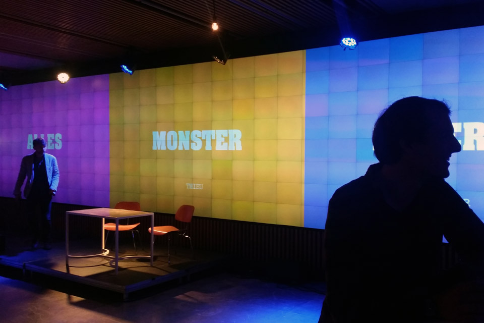
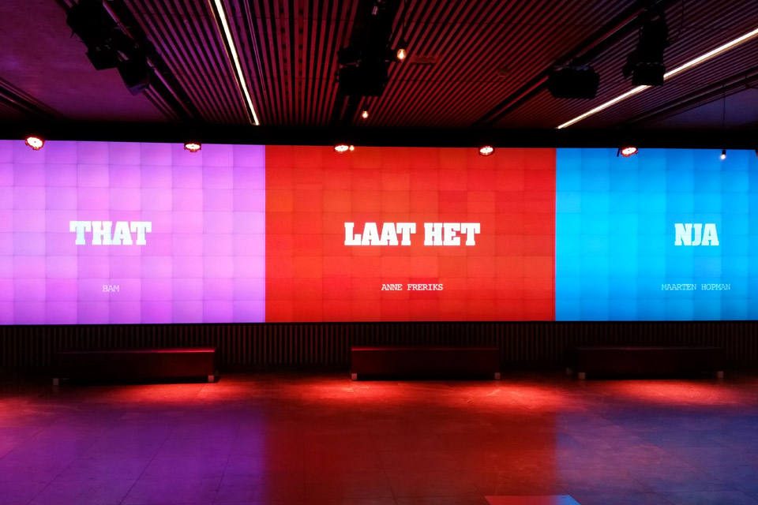
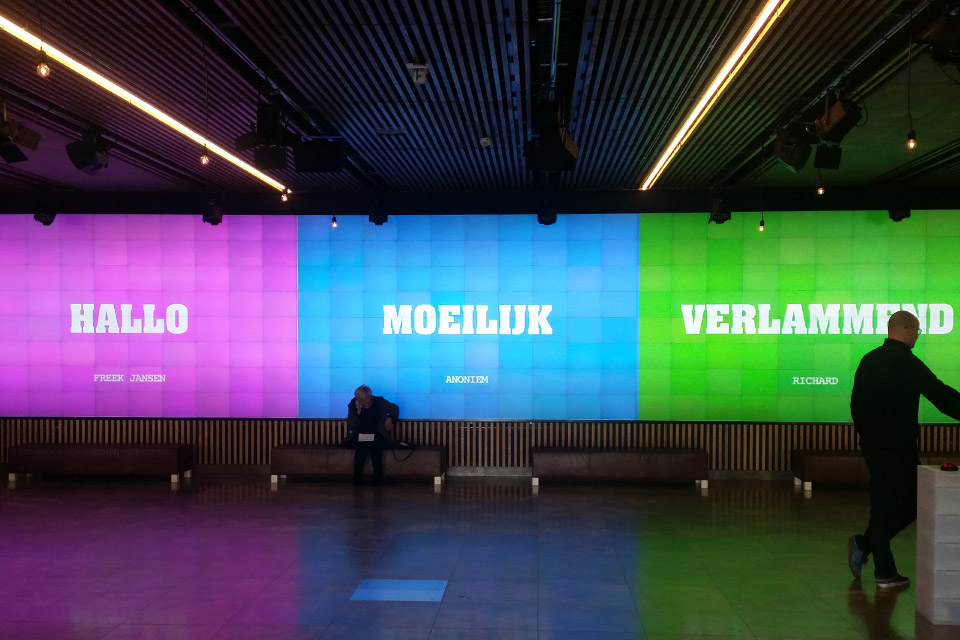
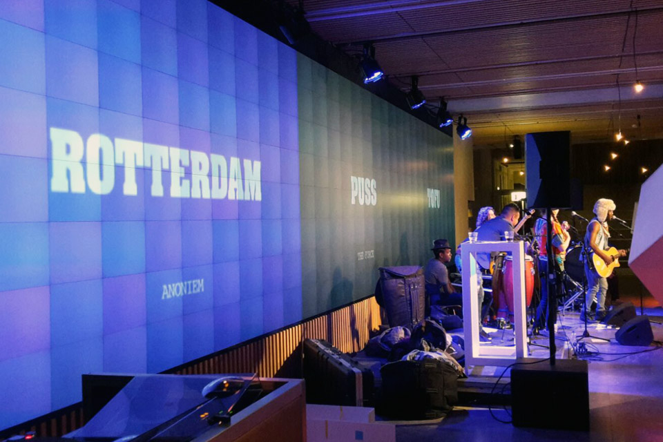

Woordfruit
In samenwerking met de tekstuele verkenners Mwah, hebben we een applicatie ontwikkeld genaamd Woordfruit voor het festival De keuze van in de Rotterdamse Schouwburg. Het concept is afgeleid van een gokkast automaat, is eenvoudig. Als bezoeker kan je een drietal woorden invoeren. Met een druk op onze woordfruit automaat knop wordt de woordfruit op het scherm getoond. Welke resulteert in verschillende combinaties van de ingevoerde woorden. Altijd prijs!




De ontwikkeling van de website is gemaakt in Wordpress en het woordfruit beeld op de mediawand wordt getoond middels een geanimeerde website in HTML/CSS & Javascript. Voor de automaat is gebruikt gemaakt van een knoppen automaat, gemaakt met Arduino en tuinbouwlampen.
Concept & Ontwerp - Mwah
Extra dank aan Erik van Wesel (Shortplay)